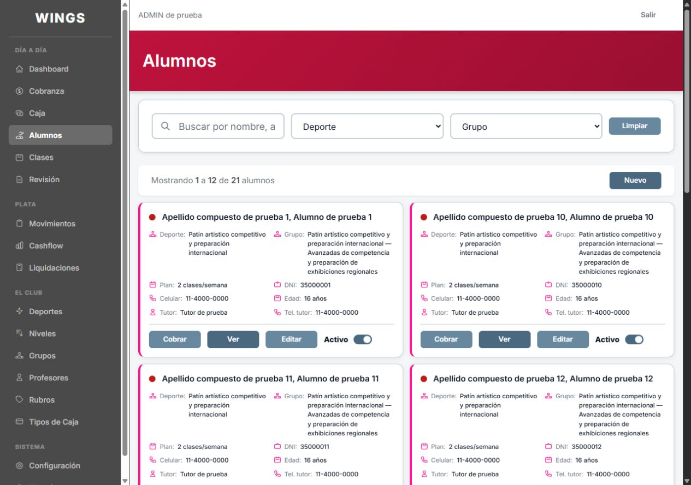
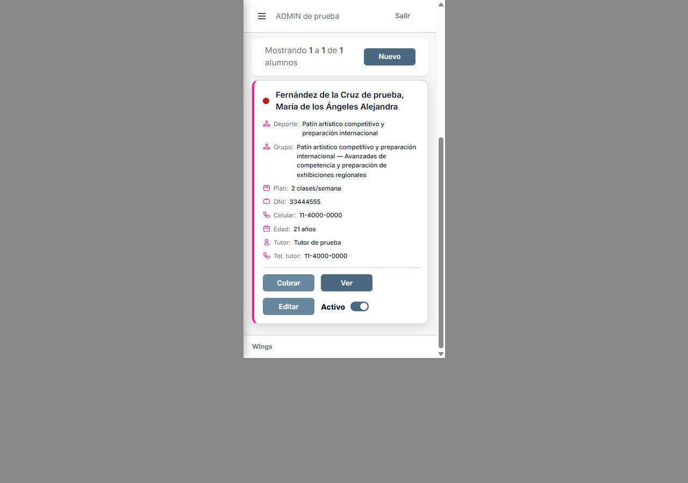
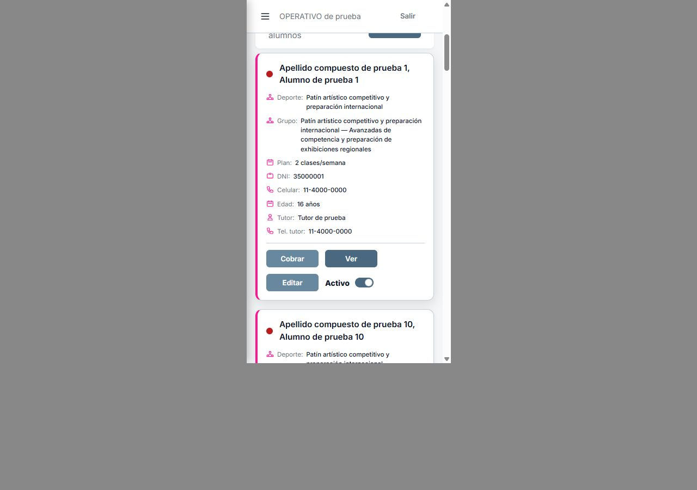

A7 · Listado de Alumnos
Antecedente: A rechazada por Carlos, B aprobada el 07/10. Ambas muestran deporte, grupo, plan y celular, además de los datos actuales. El punto sigue indicando cobranza.
Recomendación anterior descartada por Carlos: dos alumnos por fila en escritorio para compararlos sin extender una tarjeta de lado a lado. B conserva una tarjeta por fila con cuatro datos por renglón. En celular ambas son iguales.
A · Dos por fila · B · Uno por fila · Celular · Nombre largo
Capturas reales, 07/10/2026, base de prueba Codex. Solo cambia el listado de Alumnos; el estilo compartido de las otras tarjetas queda intacto. Opciones retiradas de la aplicación después de capturar. Sin publicación.
ANTES · Escritorio ADMIN
 Abrir captura original
Abrir captura originalA · Dos tarjetas por fila

Abrir captura originalB · Una tarjeta por fila
 Abrir captura original
Abrir captura originalCelular · ADMIN · Marco de 375


Caso de nombre, deporte y grupo largos




OPERATIVO · Misma propuesta




Controles
Login de control · PROFESOR: acceso denegado.


21 alumnos ficticios; 12 en la primera página y un nombre largo mostrado con búsqueda. No se cambiaron permisos ni funciones de Cobrar, Ver, Editar o Activo. Las opciones agregan CSS exclusivo de esta pantalla; no modifican alumno-card, ds-btn ni x-ds.toggle para otras vistas. Las capturas móviles conservan el marco dentro de la imagen original; el visor solo muestra esa zona.